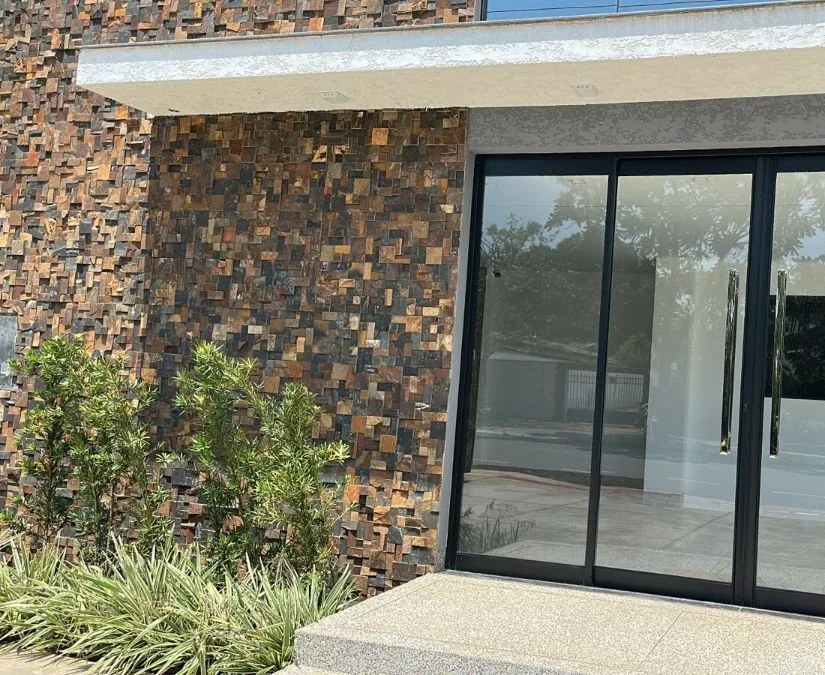
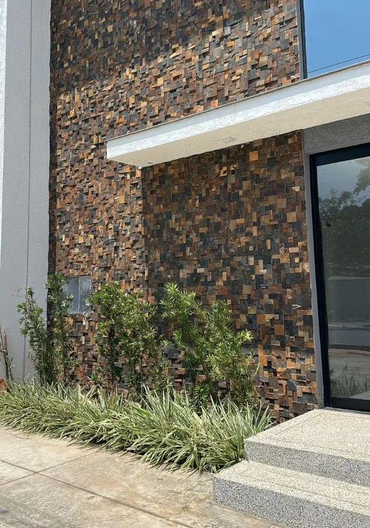

Defesa Criminal Estratégica em Ponta Porã e Dourados
Atuação em prisões em flagrante, investigações policiais, audiências de custódia e processos criminais. Atendimento jurídico em Ponta Porã, Dourados e demais localidades de Mato Grosso do Sul, conforme a necessidade de cada caso.
SOLICITAR ATENDIMENTO JURÍDICOElvis Preslei, advogado criminalista
Atendo pessoas investigadas, presas ou processadas criminalmente em Ponta Porã, Dourados e região, além de seus familiares, com linguagem simples e orientação objetiva em cada etapa do caso.
- InscriçãoOAB/MG 163.453
- FormaçãoFormado há mais de dez anos
- Pós-graduaçãoDireito Penal e Processo Penal pelo IDP de Brasília
- AtuaçãoPrisões, investigações e processos criminais
Escritório em Ponta Porã
Rua Guia Lopes, 873, Sala 2Centro, Ponta Porã/MS
CEP 79.904-654


Seu familiar foi preso?
Respostas objetivas para as primeiras dúvidas da família sobre prisão, audiência de custódia e acompanhamento jurídico.
SOLICITAR ATENDIMENTO JURÍDICO-
Como saber onde meu familiar está?
Com o nome completo e os dados da pessoa presa, é possível buscar a delegacia ou unidade prisional e localizar o procedimento.
-
O que é a audiência de custódia?
É a apresentação da pessoa presa ao juiz, em regra em até 24 horas. Nela, são analisadas a legalidade da prisão e a necessidade de mantê-la.
-
Como funciona o acompanhamento jurídico?
O advogado acompanha o procedimento, conversa com a pessoa presa e orienta a família sobre cada etapa.
-
O que devo separar antes do contato?
Nome completo, data de nascimento, local da prisão e o que se sabe sobre o que aconteceu.
Áreas de atuação
Prisões em flagrante
Assistência jurídica desde a prisão, incluindo a audiência de custódia.
Tráfico de drogas
Defesa em investigações e processos por crimes relacionados a drogas.
Investigações da Polícia Federal
Acompanhamento em investigações da Polícia Federal e da Polícia Civil.
Buscas e apreensões
Atuação em buscas e apreensões e em pedidos de restituição de bens, inclusive cargas e mercadorias.
Medidas cautelares
Orientação e defesa diante de medidas cautelares impostas no processo.
Execução penal
Orientação sobre direitos como a progressão de regime e acompanhamento da pena.
Como funciona o atendimento
-
Fale pelo WhatsApp
Toque no botão e envie sua mensagem.
-
Conte o que aconteceu
Explique a situação: prisão, investigação, processo ou apreensão.
-
Receba o retorno
Você recebe o contato com as informações sobre o atendimento.
Dúvidas frequentes
Ainda tem alguma pergunta sobre o caso? Envie pelo WhatsApp.
SOLICITAR ATENDIMENTO JURÍDICOFui intimado pela polícia. Preciso de advogado?
Você tem direito à assistência de advogado. Orientar-se antes do depoimento ajuda a entender sua situação no procedimento e como agir.
Sou obrigado a responder às perguntas no depoimento?
A Constituição garante o direito de permanecer em silêncio, e esse silêncio não pode ser usado contra você. A estratégia depende de cada caso.
Quando a prisão em flagrante pode ser revista?
Na audiência de custódia, o juiz avalia a legalidade da prisão e pode relaxá-la, convertê-la em preventiva ou conceder liberdade provisória, com ou sem medidas cautelares. A decisão depende do caso.
O que são medidas cautelares?
São restrições determinadas pelo juiz durante a investigação ou o processo, como comparecimento periódico, proibição de contato e monitoração eletrônica.
Bens foram apreendidos. É possível pedir a restituição?
Pode ser pedida por quem comprova a propriedade, quando o bem não interessa mais ao processo e não está sujeito à perda. A análise depende do caso.
Como saber se meu familiar tem direito à progressão de regime?
Depende de requisitos como o tempo de pena cumprido, o tipo de crime e o comportamento durante o cumprimento. A resposta vem da análise do processo.
Quanto custa o atendimento?
Os valores são informados no atendimento, depois de entender a situação. Assim, você decide com clareza sobre custos e procedimentos.
Já existe advogado ou Defensoria no caso. Posso pedir orientação?
Sim. Você pode buscar orientação para entender a situação. Qualquer mudança na defesa é uma decisão sua ou da família.
Existe garantia de resultado?
Não. Nenhum advogado pode prometer resultado. O que você pode esperar é orientação sobre a defesa e clareza sobre direitos e próximos passos.
Moro em outra cidade. Consigo ser atendido?
O primeiro contato é feito pelo WhatsApp, de onde você estiver. A forma de acompanhamento do caso é tratada nesse contato.